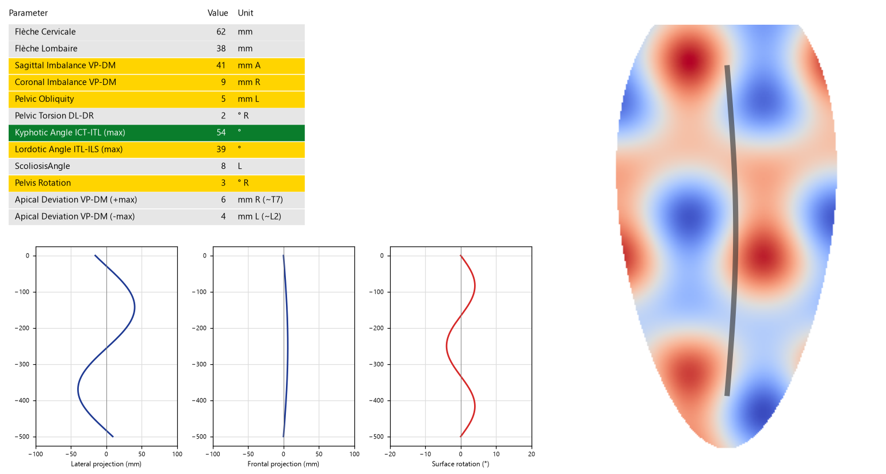
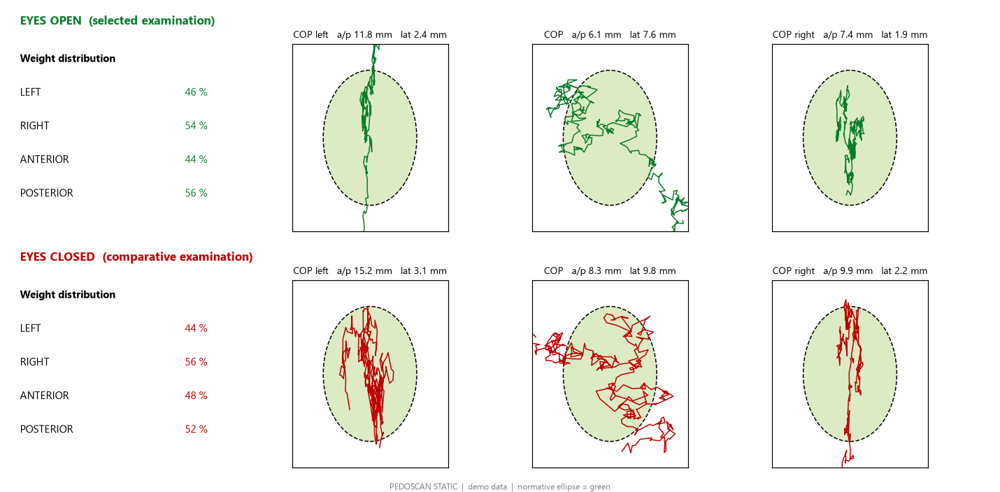
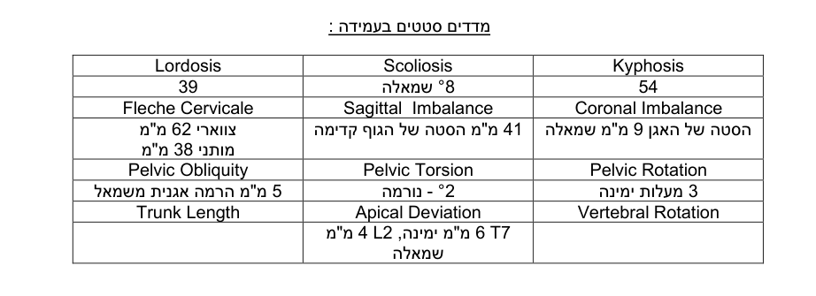
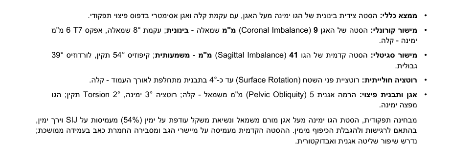
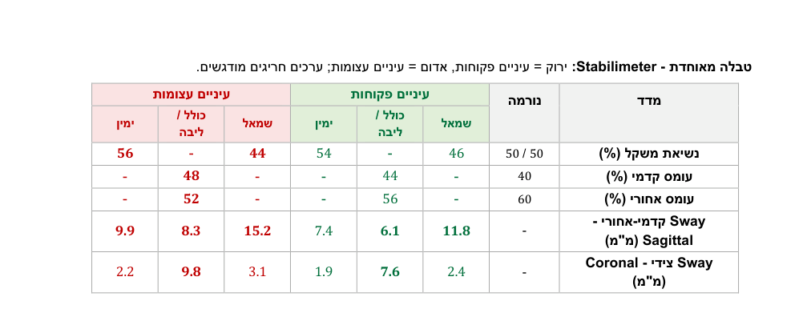

מדדים סטטים בעמידה :
| Kyphosis | Scoliosis | Lordosis |
| Coronal Imbalance | Sagittal Imbalance | Fleche Cervicale |
| Pelvic Rotation | Pelvic Torsion | Pelvic Obliquity |
| Vertebral Rotation | Apical Deviation | Trunk Length |
| - | T7 6 מ"מ ימינה, L2 4 מ"מ שמאלה | - |
Coronal view
כלי שבניתי למעבדת יציבה והליכה. הרופא מדביק בדו"ח את צילומי DIERS, Stabilimeter ו-Pedogait כרגיל. התוכנה ממלאת את טבלאות המדדים מהצילומים, כותבת ניתוח קליני מתחת לכל צילום ומסכמת הכל בדיון, ישירות בתוך קובץ ה-Word, בעברית ובעיצוב של הדו"ח.
A Windows tool I built for a posture and gait lab. The physician pastes the DIERS, Stabilimeter and Pedogait screenshots into the report as usual. The tool fills the measurement tables from those screenshots, writes a clinical analysis under every image and closes with a discussion, directly inside the Word file, in Hebrew, in the report's own layout.
שלושה צעדים. הרופא עושה רק את הראשון ואת האישור בסוף.Three steps. The physician only does the first one, and signs off at the end.
הצילומים מהמכשירים מודבקים בדו"ח מתחת לכותרת של כל סעיף, כמו תמיד.
Screenshots from the lab devices are pasted under each section heading, as always.


הטקסט נכתב לתוך אותו קובץ, מימין לשמאל, בגופן ובגודל של הדו"ח. המקור לא משתנה: נוצר עותק "- מנותח".
Text is written into the same file, right-to-left, in the report's own font and size. The original is untouched: a "- analyzed" copy is created.



אותו דו"ח הדגמה, לפני הלחיצה על "הרץ ניתוח" ואחריה. המטופל, הערכים והטקסט בדיוניים; הטקסט הוא הפלט האמיתי של הכלי על דו"ח ההדגמה.The same demo report before and after "Run analysis". Patient, values and text are fictional; the text is the tool's real output on the demo report (in Hebrew, as delivered to the clinic).
| Kyphosis | Scoliosis | Lordosis |
| Coronal Imbalance | Sagittal Imbalance | Fleche Cervicale |
| Pelvic Rotation | Pelvic Torsion | Pelvic Obliquity |
| Vertebral Rotation | Apical Deviation | Trunk Length |
| - | T7 6 מ"מ ימינה, L2 4 מ"מ שמאלה | - |
Coronal view
Coronal view
מבחינה תפקודית, הסטת הגו ימינה מעל אגן מורם משמאל ונשיאת משקל עודפת על ימין (54%) מעמיסות על SIJ וירך ימין, בהתאם לרגישות ולהגבלת הכיפוף מימין. ההסטה הקדמית מעמיסה על מיישרי הגב ומסבירה החמרת כאב בעמידה ממושכת; נדרש שיפור שליטה אגנית ואבדוקטורית.
בדיקת Stabilimeter עיניים פתוחות ועצומות :
1. בדיקת עמידה וחלוקת עומסים ב-Sagittal & Coronal View
עיניים פקוחות (ירוק) / עיניים עצומות (אדום)
ממצאים:
מסקנה:
עמידה עם נשענות ימנית ועומס קדמי ושליטה פוסטורלית מופחתת התלויה בראייה. יעד טיפולי: העברת עומס אחורה ושמאלה, חיזוק אגני ואימון שיווי משקל בעיניים עצומות.
טבלה מאוחדת - Stabilimeter: ירוק = עיניים פקוחות, אדום = עיניים עצומות; ערכים חריגים מודגשים.
| מדד | נורמה | עיניים פקוחות | עיניים עצומות | ||||
| שמאל | כולל / ליבה | ימין | שמאל | כולל / ליבה | ימין | ||
| נשיאת משקל (%) | 50 / 50 | 46 | - | 54 | 44 | - | 56 |
| עומס קדמי (%) | 40 | - | 44 | - | - | 48 | - |
| עומס אחורי (%) | 60 | - | 56 | - | - | 52 | - |
| Sway קדמי-אחורי - Sagittal (מ"מ) | - | 11.8 | 6.1 | 7.4 | 15.2 | 8.3 | 9.9 |
| Sway צידי - Coronal (מ"מ) | - | 2.4 | 7.6 | 1.9 | 3.1 | 9.8 | 2.2 |
דיון :
סיכום:
בן 46, עובד משרד, עם כאבי גב תחתון (NSLBP) מזה שנתיים, ללא אירוע טראומטי, המוחמרים בעמידה ממושכת ובסוף יום עבודה. הממצאים מצביעים על חוסר איזון פוסטורלי עם הסטה קדמית וימנית של הגו, נשענות על ימין ושליטה פוסטורלית התלויה בראייה, המעמיסים על מיישרי הגב ועל SIJ ימין.
ממצאים מרכזיים:
תובנות:
מסקנות:
יעדי טיפול והמלצות שיקומיות:
הכל רץ על המחשב במרפאה. אין שרת ביניים ואין מסד נתונים; רק טקסט מותמם וצילומי הבדיקה יוצאים ל-Claude.Everything runs on the clinic PC. No middle server and no database; only de-identified text and the exam screenshots go to Claude.
כלי קליני צריך להיות משעמם מבחינת אבטחה. אלה הכללים שהוא בנוי עליהם.A clinical tool should be boring about security. These are the rules it is built on.
שם, ת"ז, תאריך לידה, טלפון ומייל מוסרים מהטקסט. שם הקובץ לא נשלח. הצילומים מהמכשירים לא כוללים פרטי מטופל.
Name, ID, birth date, phone and e-mail are removed from the text. The file name is never sent. The device screenshots carry no patient details.
התוכנה רצה מקומית. הקבצים עצמם לא עולים לענן, ויומן השימוש שומר רק תאריך, סעיפים, מודל ומשך.
It runs locally. The files themselves never go to the cloud, and the usage log keeps only date, sections, model and duration.
המקור לא משתנה, כל הרצה יוצרת עותק, וטקסט שהרופא אישר ננעל. ערך שאין עליו הסכמה בין הקריאות לא נכתב.
The original never changes, each run makes a copy, and approved text is locked. A value the reads disagree on is not written.
התפקיד שלי: אפיון עם הרופא, כל הקוד, ההוראות לכל סעיף, מנגנון האימות והכתיבה ל-Word, הבנייה כקובץ הפעלה וההטמעה במרפאה.My role: spec with the physician, all the code, the per-section instructions, the verification and Word-writing logic, packaging as an .exe and the rollout in the clinic.